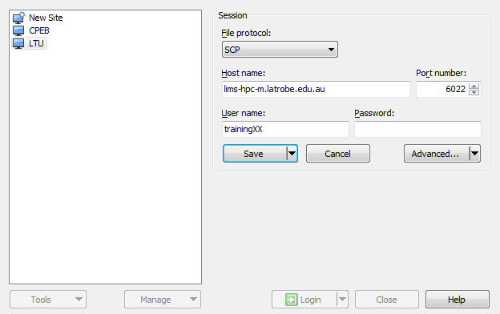
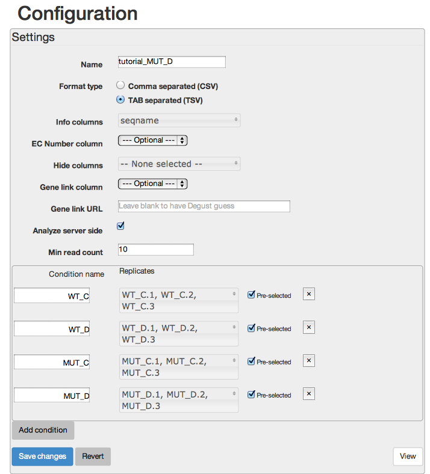
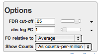

Transcriptomics Workshop
La Trobe University October 2015
Authors: Nathan Hall & Andrew Robinson
1. Background
This Workshop is designed to be run over one and a half days. No prior bioinformatics or unix knowledge is required.
Intro to Sequencing - where does the data come from
The workshop will start lecture overview of where the data comes from, (Illumina technologies) and what types of transcriptomics experiments can be performed. See the slides
Your Computer
The following programs will need to be installed on your computer to complete this tutorial. If you are waiting for something to complete, feel free to install these programs ahead of time.
Mac & Unix
- IGV [download]
- bandage [download]
Windows
- putty [download]
- winscp [download]. You will have to install onto C drive by choosing non-standard installation
- IGV [download]. Download the binary distribution
- bandage [download]
If you are installing onto the room computers, install everything on the desktop.
Remote log in
In this topic we will learn how to connect to a Unix computer via a method called SSH and run a few basic commands.
To begin this workshop you will need to connect to an HPC. Today we will use the LIMS-HPC. The computer called lims-hpc-m (m is for master which is another name for head node) is the one that coordinates all the HPCs tasks.
Server details
- host: lims-hpc-m.latrobe.edu.au
- port: 6022
- username: trainingXX (where XX is a two digit number, provided at workshop)
- password: (provided at workshop)
Both Mac OS X and Linux come with a version of ssh (called OpenSSH) that can be used from the command line. To use OpenSSH you must first start a terminal program on your computer. On OS X the standard terminal is called Terminal, and it is installed by default. On Linux there are many popular terminal programs including: xterm, gnome-terminal, konsole (if you aren't sure, then xterm is a good default). When you've started the terminal you should see a command prompt. To log into LIMS-HPC, for example, type this command at the prompt and press return (where the word username is replaced with your LIMS-HPC username):
ssh -p 6022 username@lims-hpc-m.latrobe.edu.au
The same procedure works for any other machine where you have an account except most other HPCs will not need the -p 6022 (which is telling ssh to connect on a non-standard port number).
You may be presented with a message along the lines of:
The authenticity of host 'lims-hpc-m.latrobe.edu.au (131.172.36.150)' can't be established.
...
Are you sure you want to continue connecting (yes/no)?
Although you should never ignore a warning, this particular one is nothing to be concerned about; type yes and then press enter. If all goes well you will be asked to enter your password. Assuming you type the correct username and password the system should then display a welcome message, and then present you with a Unix prompt. If you get this far then you are ready to start entering Unix commands and thus begin using the remote computer.
On Microsoft Windows (Vista, 7, 8) we recommend that you use the PuTTY ssh client. PuTTY (putty.exe) can be downloaded from this web page:
http://www.chiark.greenend.org.uk/~sgtatham/putty/download.html
Documentation for using PuTTY is here:
http://www.chiark.greenend.org.uk/~sgtatham/putty/docs.html
When you start PuTTY you should see a window which looks something like this:

To connect to LIMS-HPC you should enter its hostname into the box entitled "Host Name (or IP address)" and 6022 in the port, then click on the Open button. All of the settings should remain the same as they were when PuTTY started (which should be the same as they are in the picture above).
In some circumstances you will be presented with a window entitled PuTTY Security Alert. It will say something along the lines of "The server's host key is not cached in the registry". This is nothing to worry about, and you should agree to continue (by clicking on Yes). You usually see this message the first time you try to connect to a particular remote computer.
If all goes well, a terminal window will open, showing a prompt with the text "login as:". An example terminal window is shown below. You should type your LIMS-HPC username and press enter. After entering your username you will be prompted for your password. Assuming you type the correct username and password the system should then display a welcome message, and then present you with a Unix prompt. If you get this far then you are ready to start entering Unix commands and thus begin using the remote computer.

Basic Unix commands:
- cd - change directory
- ls - list files in a directory
- more - look at the contents of a file, space bar to proceed to next page, q to quit.
Workshop files
The files required for the workshop have already been copied into the training accounts. Type the following commands
ls -l
# the -l option gives details about the files, not just their names
this gives you a list of the files already in your directory. We will go through the contents of these files as we proceed through the workshop.
A tar.gz file containing the fastq and run files is called transcriptome_workshop.tar.gz and can be downloaded here.
Test data set
This workshop is using real 100 bp single end Illumina HiSeq data for Col-0 arabidopsis, but reads are limited to chromosome 1 of the genome to make the data files and computational time more manageable. The data file chr1.fastq has over 2 million reads. Typical read count for a basic experiment is 15-20 million reads per sample.
Fastq file format
line1: @sequence_name
line2: sequence string
line3: + character
line4: quality string
Quality encoding ordered lowest quality to highest quality:
!"#$%&'()*+,-./0123456789:;<=>?@ABCDEFGHIJKLMNOPQRSTUVWXYZ[]^_`abcdefghijklmnopqrstuvwxyz{|}~
example:
@HWI-1KL119:131:C4W5NACXX:2:2201:14635:56396 GAAATCGGACGGTTTAGTGAAAATGGAGTATCAAGTTGGGTTTGGGTTCCGTCCGAACGACGAGGAGCTC + BB<00;B;7BFFFFBFB;FFBBB;BBB;;BBFBBFBFBBFFFFFFBBBFFFFIIIIIIIFIIIIIIIIFF
You can look at the contents of the fastq file by typing
more chr1.fastq
Type q to exit the screen
2. Data QC
The typical first step of an NGS project is to analyse the quality of the data. The easiest way to do this is to use the fastqc program
The instructions to the computer are in the run_fastqc program that you copied earlier into your directory. You can see the content of the run_fastqc file by typing
more fastqc
Type q to exit the screen
A command called sbatch tells the computer to execute the run_fastqc instructions. The fastqc program is loaded using the module load command and the program is executed with the last line of the script: with fastqc filename.fastq. Now we will submit this job to the computer.
sbatch run_fastqc
Aside: our computers run the slurm queueing system which uses sbatch, a similar command qsub is used for the PBS queueing system.
Once you have submitted your job with the sbatch command you can see if it has finished by typing the squeue command, which lists all the current jobs. You can choose to only see your jobs with the command:
squeue -u trainingXX
where XX is replaced with your training account number.
Alternatively you can type
ls -lrt
# t=time, r=reverse order
You will see a list of files with the most recent at the bottom of the page the file that starts with slurm contains the output of your run_fastqc script You can see the contents of the slurm file by typing
more slurm-*
Aside: the * character is a wildcard, so the above command will look at all files that starts with slurm. At the moment we only have one file, but we can type in the full name to get the file of interest. There is also the auto complete tab function. Try typing more slurm, then the tab key to get an auto complete of the slurm file. Note: auto complete does not work if the results are ambiguous
Analysing the fastqc output:
The easiest way to analyse the output of the fastqc job is to download the chr1_fastqc.zip file and visualise through a web browser.
Macs
From a mac terminal window (not the lims-hpc window) paste the following command:
scp -P 6022 trainingXX@lims-hpc-m.latrobe.edu.au:chr1_fastqc.zip ~/Desktop
Note: You will need to replace XX with your training account number and enter the password when prompted.
On your desktop, double click on the zip file, and then go into the extracted folder and double click on the .html file, and it should open up in your web browser.
Windows
Install winscp and login using the settings below. Make sure you have your correct training username 
You will then be able to drag the unix files (right screen) onto your local computer (left screen) The file you need transfer for this fastqc analysis is chr1_fastqc.zip
Once the file is transferred, right click on the file and select extract. You can then enter the extracted chr1_fastqc directory and open the html file.
Analysis
Once the html file is opened in your web browser, the things to look at are:
Quality:
GC content:
overrepresented sequences - this is where adaptors can be noticed,
you may also want to blast any unknown overrepresented sequences.
Note: these stats are optimised for genomes, NOT transcriptomes, so some things will not conform to expectations, particularly GC content and duplication rate.
Aside: Most modern Illumina data does not need quality trimming, but sometimes adaptor and quality trimming is still required. Trimmomatic is one of the most commonly used trimming programs.
3. Mapping RNAseq Data
Once we have analysed the raw reads and satisfied ourselves that the data is OK, we can then start the mapping process using the tophat and bowtie programs. Here each read is mapped to the reference genome (using bowtie) and then a second round of mapping (tophat) incorporates splice sites.
For this mapping we can submit the job by typing
sbatch run_tophat
Have a look at the contents of this run_tophat script with the more command.
After the job has started there will be a tophat directory created. Type
cd tophat
to go into the tophat directory. Type ls -l to see what is there and use more to visualise any files text that are present.
Use cd dir_name again to go into any subdirectories, cd .. to go up a directory, or just cd to go back to your home directory.
Follow the status of your job with the squeue command and look at your slurm output file as for the previous job.
When the run has finished, the most important file is accepted_hits.bam. This binary file contains all the the details of the data that maps to the genome including the mapping coordinates.
To look at the text version of this bam file we use the samtools program. First this program needs to be loaded using the module load command, and then executed as below (copy and paste this into your terminal/putty window):
cd ~/tophat
module load samtools-gcc/1.2
samtools view accepted_hits.bam | more
Type q to get out of the more session.
We won’t worry about all the details of the sam file at this stage as we will look at some of the more informative fields later today.
Look at the file align_summary.txt using the more command. As we are only mapping chr1 reads this is not particularly interesting, but can be informative for full data sets as differing mapping rates across samples can alert you to library problems or other issues.
4. Visualising mapped data
This section uses the Interactive Genome Viewer (IGV) to look at reads that map to the genome.
Installing IGV on your computer:
Before we can visualise the data, the program needs to be installed locally.
Go to the [IGV webpage]
You will need to register before you can download the application.
Windows users will need to run the program by opening IGV the windows batch file
File transfers
Once this run_tophat script has finished, we can copy the the important files to a local computer and visualise the mapped data interactively.
Mac:
scp -P 6022 trainingXX@lims-hpc-m.latrobe.edu.au:tophat/accepted_hits.bam* ~/Desktop
Important: this copies the bam file and the index file.
scp -P 6022 trainingXX@lims-hpc-m.latrobe.edu.au:tophat/junctions.bed ~/Desktop
Windows:
Use winscp to copy the following files from the tophat directory: accepted_hits.bam, accepted_hits.bam.bai, junctions.bed
Visualisation
Now that IGV is installed and the files are transferred onto your computer, you can start IGV and read in the files. Choose the A. Thaliana (TAIR 10) genome from the genome menu (top LHS), then file open and choose the bam file and then the bed file. You do not need to manually read in the bai file - this is done automatically.
IGV shows individual reads, with splicing details shown. Things to see, histogram, splicing, read directions, how genes, introns and exons are displayed, reads that do not match the known genes etc…
Find genes that have alternative splicing, retained introns, have good coverage, bad coverage, have overlapping reads with another gene or are interesting in any other way and record the AT numbers for later in the workshop.
5. Gene Counting
Once the data has been mapped, we can count each gene using the program htseq-count. This is a conceptually simple process, where if a read unambiguously maps to a gene, then that gene has one count.
Note: alternative isoforms are ignored for most gene count experiments and counts are for all isoforms combined.
Documentation for htseq-count is found here:
http://www-huber.embl.de/users/anders/HTSeq/doc/count.html
First submit the slurm script
sbatch run_htseq
The final output of htseq-count a table list of genes and their counts and is called gene_counts.txt and can be found in the tophat directory. Use the more command to look at this file.
Note that we are only mapping to genes on chromosome 1 so many genes have no reads.
You can sort this file in terms of gene counts by using the command:
sort -k 2 -n -r gene_counts.txt | more
Further Gene count analysis
Go back to IGV and look at some genes with:
1. High counts
2. Middle level counts
3. Low counts
record a few AT numbers for later in the workshop
Reads not counted
When a read is mapped to more than one position in the genome, then this read is not counted by htseq-count. In IGV, go to AT1G11270 to see some reads that are not counted. The white reads have a zero mapping quality.
Info: when you mouse over a read in IGV, it will show you mapping information. Take note of the Cigar string (M=match, N=gap), mapping quality (50=good, low value=bad) and NH (number of hits, if >1 then mapping is ambiguous). Google “samtools format” to see all the details
Now go to AT1G11300 and decide on whether you believe the apparent splicing in that gene.
Visualise gene AT1G64940. How many reads should be counted by htseq-count for these genes? Using the grep command below (grep just extracts the line of the file that matches the string, AT number in this case)
grep AT1G64930 gene_counts.txt
grep AT1G64940 gene_counts.txt
This will give you the counted reads for these genes
Finally type:
tail gene_counts.txt
to see the number of reads that are not counted, and the reasons why:
no_feature
ambiguous
alignment_not_unique
6. Differential Gene Expression
Rather that mapping six whole transcriptomes and combining the results in the workshop, we will use a file that has already been generated called WT_MUT_counts.tsv. This comes from a data set being worked on in the Whelan lab, where a LETM gene has been knocked out and plants are put under a drought stress environment. Visualise this data table with the more command.
We can do simple, but statistically valid differential expression analysis using a web server called degust
[http://vicbioinformatics.com/degust-training/]
You will need to copy WT_MUT_counts.tsv onto your computer and then upload the data into degust.
Follow these steps:
1. Upload your tsv file
2. give the dataset a name
3. Info columns is set to seqname
4. enter Min Read Count as 10
5. Group replicates using the Add condition button
6. Press Save Changes where you are done.
I will demonstrate the options of degust and help you interpret the results.

MDS plot - what is an MDS plot and how do replicates group?
MDS plot, (somewhat like principle component analysis), groups samples on 2D graph on their most variable genes. Note: The groupings of replicates are not taken into account in this analysis.
You can change the number of genes that are used to calculate the MDS plot. This does not usually have a large effect.
Differential expression analysis
There are two other tabs which relate to differential expression analysis. Expression - parallel coordinates, and Expression - MA plot. Parallel expression give you a heat map representation, and the MA plot is a measure of differential expression in combination with absolute expression.
You will need to limit the genes you are viewing. FDR cut off (false discovery rate) is the main filter, but you can also choose to define an absolute log FC filter. A value of 1 means that you require a two fold difference in expression (see below for explanation of log2 FC).

Aside: how to define expression changes : use log2 values
If a fold change in expression (counts) is 2, then log2=1
If a fold change in expression is 4, then log2=2
If a fold change in expression is 8, then log2=3
If a fold change in expression is -2, then log2=-1
If a fold change in expression is -4, then log2=-2
If a fold change in expression is -8, then log2=-3
Ratios of expressions (counts) don’t work as two fold reduction is 0.5,
4 fold reduction is 0.25
8 fold reduction is 0.125
Within degust, you can also change the analysis method from Voom/Limma to edgeR. All analysis is done by the degust server.
Aside: Limma and edgeR info
Voom/Limma: Linear Models for Microarray and RNA-Seq Data
Voom: http://genomebiology.com/2014/15/2/R29, precision weights unlock linear model analysis tools for RNA-seq read counts
edgeR: Implements a range of statistical methodology based on the negative binomial distributions, including empirical Bayes estimation, exact tests, generalized linear models and quasi-likelihood tests.
Spend some time interacting with these these pages, exploring what information can be gained from this data. Look for patterns in the heatmaps, how may these relate to function?
Pathway analysis
Working out what to do with a list of differentially expressed genes is often the most difficult aspect of an RNAseq experiment. One simple thing is to do gene ontology or GO analysis with websites such as GOrilla [http://cbl-gorilla.cs.technion.ac.il] or AgriGO [http://bioinfo.cau.edu.cn/agriGO/index.php]. We will use GOrilla for this tutorial, but the only plant option is arabidopsis. Try AgriGO for many other plants.
First you will need to download your FDR ordered list of genes from degust. The input for GOrilla is a ranked list, not just the FDR < 0.05 genes, so download all genes. This .csv file can then be opened up in excel, then copy and paste the AT gene names into gorilla to get a basic GO enrichment analysis.
Note: These GO term analyses can be very useful, but also have their limitations
Venn diagrams
Analysis using Venn diagrams is often a powerful way to do list comparisons. Download lists of differentially expressed genes from pairwise interactions. Use edgeR for this exercise.
1. WT_C v WT_D
2. WT_C v MUT_C
3. WT_C v MUT_D
These gene lists can then be pasted into the BioVenn webpage for further analysis. [http://www.cmbi.ru.nl/cdd/biovenn/]. You can ask questions like, “what genes that are differentially expressed in WT_C v WT_D are already differentially expressed in MUT_C v MUT_C?”
Note: It is often important to separate gene list analysis into upregulated genes and downregulated genes, not just a list of differentially expressed genes. Also, each analysis will require different condition comparisons depending on the experimental design and biological questions.
Day two
7. Transcriptome Assembly
When a reference genome is not available, then assembling the reads using programs such as trinity is the typical route of analysis.
[http://trinityrnaseq.github.io/]
This workshop will take the same raw fastq data as was mapped to the genome and assemble it, then analyse some of the transcripts. For the sake of speed, only the first 250 thousand reads are assembled. These correspond to approximately the first 2.5MB of chromosome 1.
The first step is to make a file with these reads using the head command. We take the first million lines as there are four lines per sequence.
head -1000000 chr1.fastq > chr1_250K.fastq
Look at the run_trinity file and then submit the job:
sbatch run_trinity
The final output file is called Trinity.fasta and is in the trinity directory.
The format of the output fasta file is:
c203_g1_i1
c represents the contig number - loosely represents a gene
g represents the fragment number of the gene
i represents the isoform or the sequence variant number
8. Visualising transcripts
The bandage visualisation tool can be downloaded from [https://github.com/rrwick/Bandage/releases] select the version that you require and install
The Trinity.fasta file needs to be transferred onto your computer:
mac
scp -P 6022 trainingXX@lims-hpc-m.latrobe.edu.au:trinity/Trinity.fasta ~/Desktop
windows
copy the Trinity.fasta file, found in the trinity directory onto your local computer using winscp.
Running bandage
Open up the Trinity.fasta file with the file/Load graph menu option. Then press the Draw graph button. This may take a little time. You can search for particular contigs with the Find nodes search option. you can only search at the cXXX level (gene model), you can’t put in the the entire contig name, so make sure you pick the partial search option. You will need to come back to this program after the next step.
9. Annotating transcripts
The best and easiest way to annotate transcript is to use blast. We will now set up a blast job which will compare our assembled transcripts against a database of known arabidopsis proteins. Firstly, look at the run_blast script and then submit the script.
sbatch run_blast
The output of the blast run is found in the text file call Trinity_blast.txt.
Take some time looking over the blast output.
Things you might look out for, and record some AT numbers:
- Correct full length transcripts
- Partial transcripts
- Alternative splicings
- Fragmented assemblies
- No hits
- Anything else interesting
Go back to IGV, and search with the AT number and see how the reads relate to the blast results, comparing genes of first four categories above. You can also visualise some of these alternatively spliced trinity transcripts in bandage.
Try visualising AT1G02080 and the trinity assembly that matches this protein. See example below to see how to search for this.
What do some of the alternative transcripts represent?
How do they look in bandage and what do the reads look like in IGV?
Have a look at AT1G01030 in IGV. How do you think the this would have assembled? Type the following command to see the blast hits to this gene.
more Trinity_blast.txt
#then within the program type the following to search
/AT1G01030
If you prefer, you can transfer this Trinity_blast.txt file onto your local computer and search it using your favorite text editor.
Assembly Note: When transcriptomes are assembled, all the data from all the conditions are usually combined to get a standard reference and minimise gene fragmentation for the low coverage genes. All reads are then mapped back onto the transcriptome for counting and differential expression analysis
Aside: Where did the blast database come from?
https://www.arabidopsis.org/download/index-auto.jsp?dir=%2Fdownload_files%2FSequences%2FTAIR10_blastsets
The database was then indexed with the following blast command:
makeblastdb -in TAIR10_pep_20101214_updated.txt -out TAIR10_pep -title TAIR10_pep -dbtype prot
10. Summary
This is the end of the formal part of the workshop. This workshop has been designed to give you a greater understanding of the concepts and steps of RNA seq analysis. Things that you should have an understanding about are:
1. Where does the data come from
2. What is the quality of the data
3. How the data is mapped to a reference
4. How is the data assembled
5. How are reads turned into counts
6. What are the basic concepts of differential expression analysis
This workshop does not cover how to further analyse lists of differentially expressed genes. The interpretation is often the hardest part of the analysis, and requires different approaches, depending on the experiment.
Remember, the more you understand about the bioinformatics process, the more you can get out of the analysis.
11. Individual Project Discussions
Two transcriptome projects are rarely the same, in terms of design and analysis. This final session gives you the opportunity to discuss aspects of your project, with other attendees and the workshop presenters.